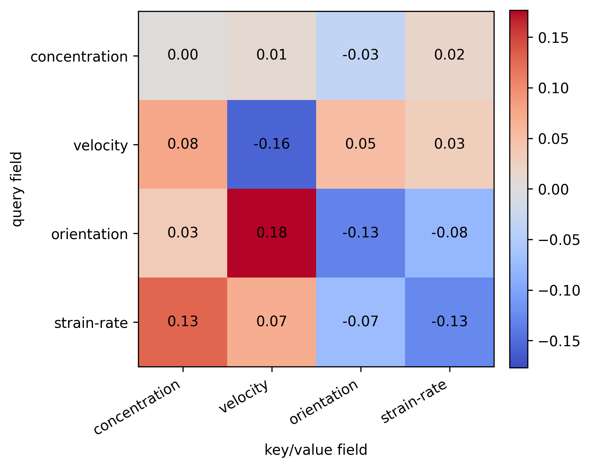
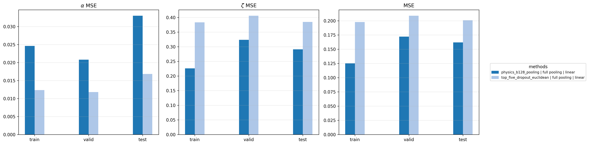
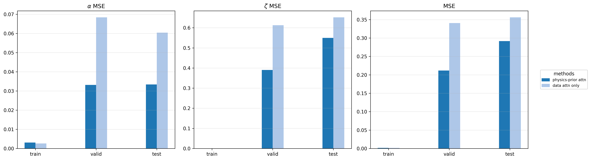

Physics-Aware Representation Learning for Physical Systems
Abstract
Learning representations aligned with physical dynamics remains a central challenge in scientific machine learning. We study this problem within the JEPA framework on the active matter dataset from the Well benchmark, and identify preservation of temporal structure during encoding as the key factor driving downstream physics-prediction quality.
Building on this insight, we propose two complementary approaches. H-JEPA decomposes spatial and temporal modeling through its hierarchical structure, reducing total test MSE on the regressed parameters (α,ζ) by up to 70% relative to the baseline. FA-JEPA introduces field-aware attention together with a physics-prior attention mechanism that injects domain knowledge directly into the attention process, lowering total test MSE by roughly 20% over the prior-free variant on both linear and kNN probes.
Why physics-aware JEPA?
Self-supervised pixel-space surrogate models trained to predict the next frame are expensive and often misaligned with what scientific applications actually need: estimates of the hidden physical parameters that govern dynamics. JEPAs avoid pixel reconstruction by predicting latent futures, but vanilla JEPA encoders trained on physical fields often lose the temporal structure that downstream parameter inference depends on.
We work on Polymathic Well's active matter benchmark — rod-like self-propelled particles in a Stokes fluid, governed by two scalar parameters: the active dipole strength α and the alignment interaction strength ζ. Each trajectory is observed through 11 physical channels (concentration, 2-D velocity, rank-2 orientation tensor D, rank-2 strain-rate tensor E). The task is to learn an encoder, then freeze it and recover (α,ζ) via a single linear layer or kNN — no fine-tuning, no MLP heads, no attention pooling.
H-JEPA: Hierarchical JEPA
H-JEPA structurally decomposes the encoder into two pathways supervised by complementary self-supervised pretexts:
- An inner pathway — shallow encoder fθ1 plus inner predictor gφ1 — performs latent denoising of a Gaussian-corrupted context, retaining instantaneous local field structure.
- An outer pathway — deep encoder fθ2 plus outer predictor gφ2 — performs standard next-window latent prediction, capturing trajectory-level dynamics.
Both pathways share parameters in the shallow encoder, so the two pretexts shape a common trunk along complementary axes. EMA target encoders provide stop-gradient targets and the loss is a VICReg pair loss with coefficients (2,40,2). The full model has ~36.5 M parameters; only ~4.0 M are used during frozen probing.
What helps. Ablations show that (i) keeping the inner denoising pretext is necessary (removing it inflates kNN total MSE by 26%); (ii) paired next-window supervision is the dominant signal — redirecting the outer target to the corrupted current window almost doubles linear MSE; (iii) heavier shallow supervision (w1=1.0) consistently helps rather than competing with the outer loss.
FA-JEPA: Field-Aware JEPA with a physics prior
FA-JEPA uses a ViViT-style encoder/predictor with three attention modes — field (across the four physical fields at a fixed space-time location), spatial (across patches at a fixed time within a field), and temporal (across time at a fixed location within a field) — so that the 11 channels are grouped by their physical type (scalar / vector / rank-2 tensor) and patched with field-specific 3-D tubelets of size 2×16×16.
On top of field attention, we add a physics-prior attention bias. The bias is built from the nematic order tensor Q: orientation components are pooled to the patch grid, unit-normalized, and pairwise dot products Sij = q̂i · q̂j give a similarity that rewards attending to patches with similar nematic alignment. The final attention is a convex combination A = (1−λ) Adata + λ Aphys with Aphys=softargmax(τS) and λ = σ(η), τ = τmaxσ(ρ), both learned. Initialized small so training begins close to standard attention and adopts the prior only where useful.

Results
We report z-score-normalized test MSE for
(α,ζ) per-parameter and averaged ("Total").
The encoder is frozen and used as a feature extractor; probes are a closed-form least-squares
linear regressor (torch.linalg.lstsq) and inverse-distance-weighted kNN.
The supervised reference predicts (α,ζ) directly
without any probing.
| Method | Linear MSE ↓ | kNN MSE ↓ | k | ||||
|---|---|---|---|---|---|---|---|
| α | ζ | Total | α | ζ | Total | ||
| Baseline (Qu et al., 2026) | 0.059 | 0.460 | 0.260 | 0.081 | 0.570 | 0.325 | 5 |
| Temporal — ViT3D-d6 + FFT (ours) | 0.016 | 0.197 | 0.107 | 0.009 | 0.231 | 0.120 | 20 |
| H-JEPA (ours) | 0.014 | 0.173 | 0.093 | 0.009 | 0.189 | 0.099 | 20 |
| FA-JEPA (ours) | 0.033 | 0.291 | 0.162 | 0.033 | 0.550 | 0.292 | 4 |
| Supervised reference | 0.027 | 0.077 | 0.052 | – | – | – | – |
z-score MSE on the test set per configuration and probe. Highlighted rows are our contributions (Temporal, H-JEPA, FA-JEPA); the top row is the JEPA baseline of Qu et al. 2026 that we build on. Bold marks the best self-supervised result per column. H-JEPA reduces total test MSE by ~64% (linear) and ~70% (kNN) versus the baseline while keeping the probed feature dimension small (~4 M trainable parameters in the encoder used for probing).


Takeaways
- Tokenization, not depth, drives the JEPA baseline. A six-block ViT3D over 4×16×16 spatiotemporal patches outperforms every CNN/Conv+Attn variant we tried at matched depth — the win is the tokenizer encoding temporal structure before pooling collapses it.
- Hierarchical pretexts compose. H-JEPA's inner denoising and outer next-window prediction shape a shared trunk along complementary axes; removing either degrades the probe.
- Physics priors belong inside attention. Adding a soft, learnable nematic-alignment bias to FA-JEPA's attention improves probe MSE without overriding the learned data attention — the model adopts the prior where it helps and ignores it elsewhere.
- Aligning representation learning with the structure of the underlying physics is the lever — bigger generic models are a weaker substitute.
BibTeX
@misc{ji2026physicsaware,
title = {Physics-Aware Representation Learning for Physical Systems},
author = {Ji, Charles Cheng and Shi, Zhanhe and Wang, Richard and Yalovetzky, Romina},
year = {2026},
note = {NYU CSCI-GA 2572 Deep Learning, Spring 2026},
url = {https://saltfish-len.github.io/Physics-Aware-Project-Page/}
}